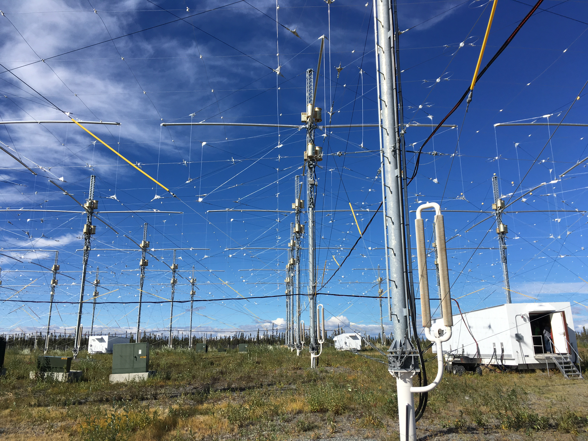

Bienvenue sur notre site traitant de la partie sombre du projet HAARP.
HAARP (High Frequency Active Auroral Research Program) est un complexe de recherche américain dédié à l'étude de l'ionosphère. L'objectif est d'en étudier les propriétés complexes. Officiellement ce projet est à objectif scientifique.
Il s'avère que HAARP est également une arme de destruction massive permettant aux états-unis à travers l’US Air Force de déstabiliser voir anéantir les systèmes agricoles et écologiques partout autour du globe. Selon un rapport de l’US Air Force (AF 2025 Final Report) ces techniques pourraient engendrer une multitude de catastrophes naturelles contrôlées que le gouvernement américain pourrait déclencher sur des potentiels ennemis. Le projet HAARP, composé de 132 installations à hautes fréquences, est capable d’interférer avec la ionosphère, il est donc l’application de ces techniques militaires dévastatrices. Officiellement aucun objectif militaire n’a été reconnu, cependant le document précédemment cité et les recherches sur ces techniques d’armement météorologique indiquent clairement l’objectif principal de cet installation. Sur ce site nous expliquons le fonctionement du projet HAARP et ses applications militaires.